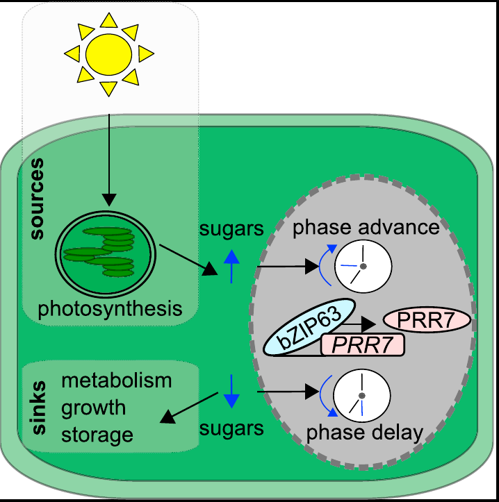

Circadian entrainment by sugars
The study showed that bZIP63 regulates the clock gene PRR7, and that sugar availability can adjust circadian phase through a pathway involving Tre6P, SnRK1/KIN10 and bZIP63.
Frank A, Matiolli CC†, et al. Circadian Entrainment in Arabidopsis by the Sugar-Responsive Transcription Factor bZIP63. Current Biology 28, 2597–2606.e6 (2018). DOI: 10.1016/j.cub.2018.05.092.
Open article →